Префектура Исикава · Комацу · где остановиться
Auberge eaufeu: сельская школа в Комацу, где ночуют среди картин и ужинают дарами сатоямы
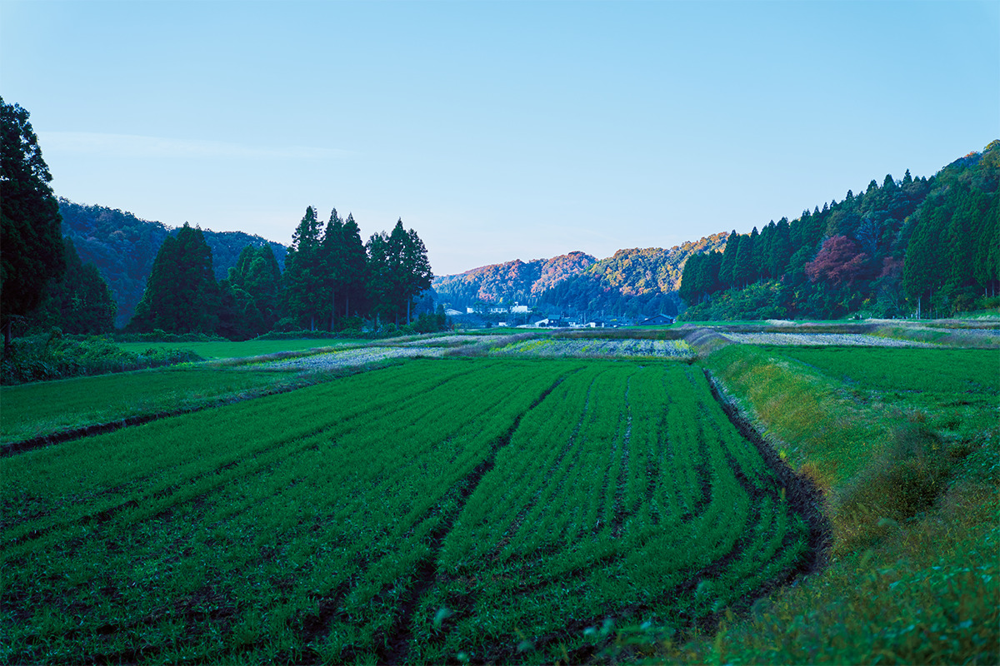
В деревне Канконоси под Комацу полвека учились дети из окрестных сёл. В 2018 году школу закрыли, а в 2022 году в её классах открылась обержа, ради ужина в которой гурманы приезжают из других префектур.
Место
Школа у каменного обрыва
Комацу лежит на юге префектуры Исикава, и история этих мест связана с камнем уже около 2300 лет. В период Яёй здесь вытачивали украшения из яшмы, а с эпохи Мэйдзи (с 1868 года) в окрестностях добывают камень ханасака, сырьё для знаменитой керамики Кутани-яки. «Каменная культура» Комацу внесена в список японского наследия. Вода здесь чистая, а реки, леса и поля кормят округу вьюнами и другой речной рыбой, кабанами и дикими травами.
Деревня Канконоси стоит в холмах, в получасе езды от аэропорта Комацу. Долгое время тут добывали камень никкасэки, и прямо напротив бывшей школы поднимается отвесная стена старой каменоломни. Холмы вокруг местные зовут «Канамбо-яма», и их видно и от главного входа, и с крыши.
Начальная школа Нисио работала здесь около полувека и закрылась в марте 2018 года. В июле 2022 года она открылась снова, уже как Auberge eaufeu: обержа, то есть ресторан с номерами, куда приезжают ради кухни и остаются на ночь. Так деревня хотела дать новую жизнь своей округе с её природой и едой.
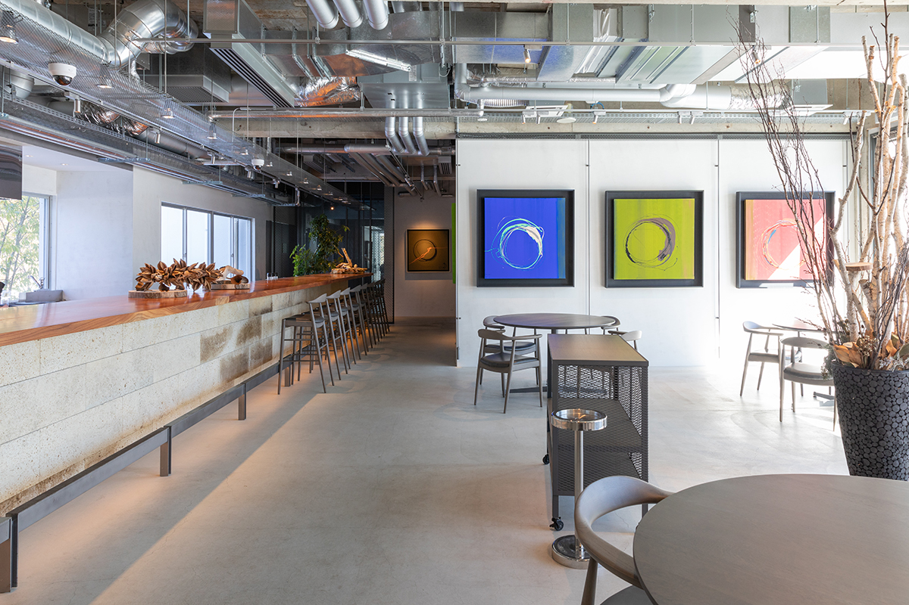
Силуэт здания, классы, доски и раковины в коридоре остались от школы. Библиотека превратилась в сьют, школьная кухня, где готовили обеды для учеников, стала кухней ресторана. В оберже 12 номеров шести типов, от компактных двухместных до сьютов. В сьюте и полулюксе стоят проигрыватели для пластинок.
Искусство
Музей, где можно переночевать
Почти всё, что висит на стенах, создал один современный художник. Шестилетним мальчиком он увлёкся лондонским панком и начал рисовать прямо на одежде, так и началось его искусство. Для обержи он работал на месте, в самом здании и в местном святилище, стараясь уловить силу этой земли. Сотрудники называют обержу «музеем, в котором можно переночевать», и с ними трудно спорить.
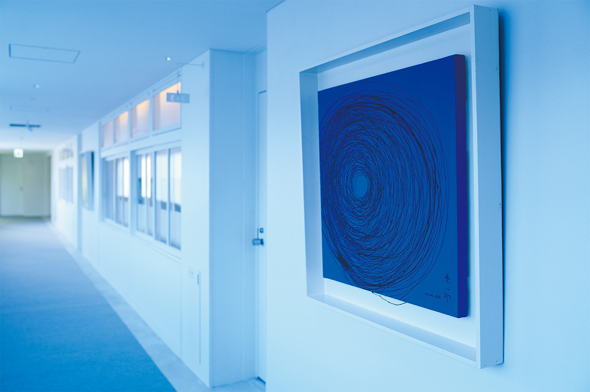
В сьютах живопись выходит за пределы холстов: краска лежит прямо на стенах и на полу, и вся комната становится одной большой работой. При этом комнаты не теряют школьного уюта.
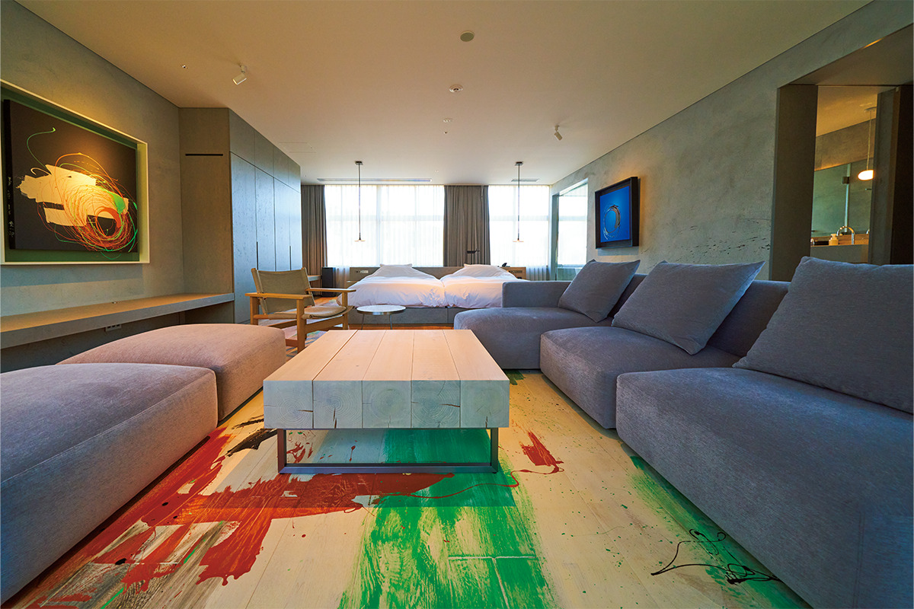
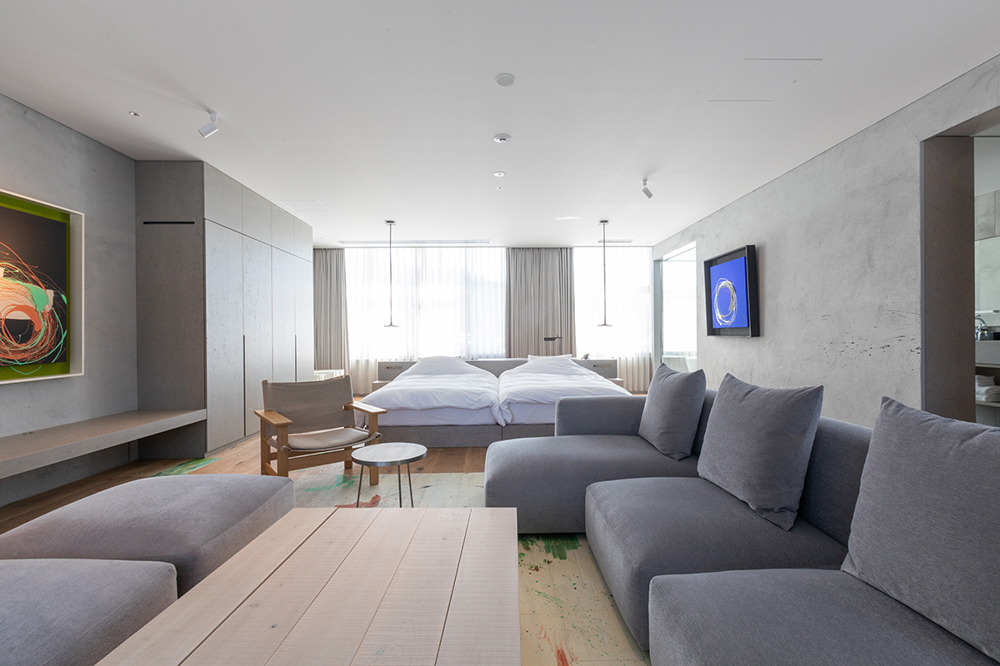
Шеф
Сёта Итои
Гурманов из больших городов привлекают сюда не только стены, но и шеф. Сёта Итои родился в 1992 году в префектуре Киото. После кулинарной школы Цудзи он уехал учиться во Францию и работал в эльзасском ресторане с тремя звёздами Auberge de l'Ill. В 2018 году в 26 лет он стал самым молодым победителем RED U-35, крупнейшего японского конкурса поваров не старше 35 лет. В 2019 году Forbes включил его в список «30 до 30» Азии в разделе искусства, а французский гид Gault&Millau 2023 года назвал его молодым шефом, от которого стоит ждать многого.
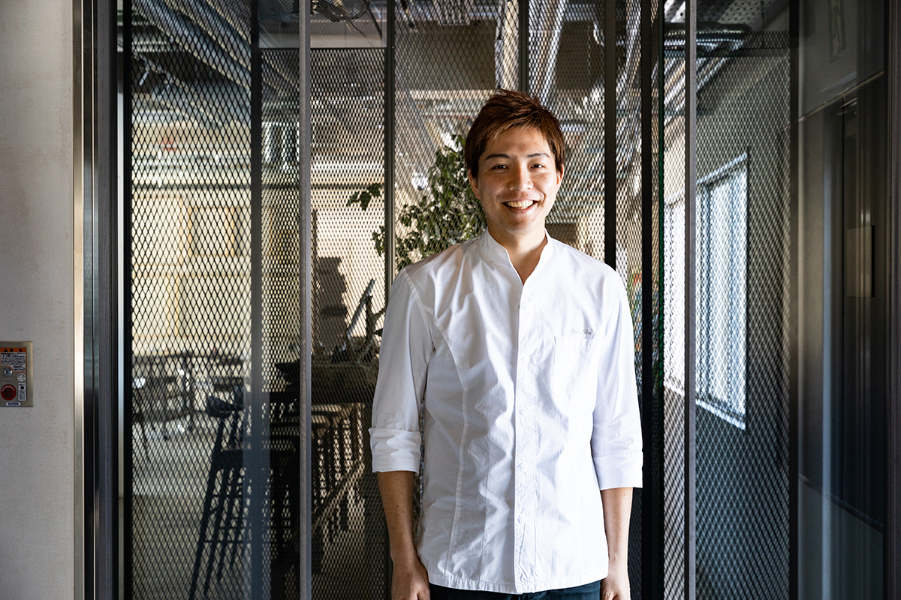
До переезда в Комацу он готовил в Асии в префектуре Хёго, в Бургундии и в Лос-Анджелесе. В 2022 году Итои стал шефом eaufeu: продукты и природа Комацу убедили его сразу.
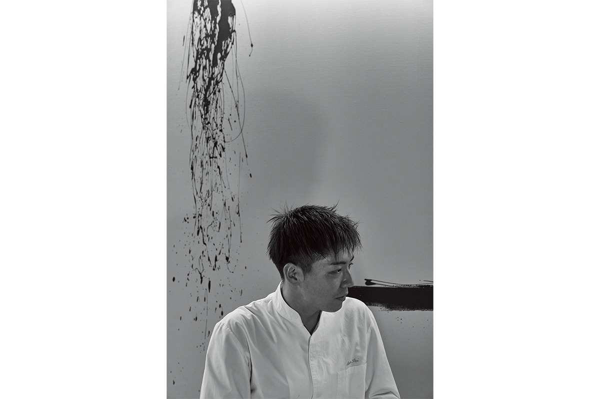
«В Комацу нет такого продукта, который сразу называют при имени места, как тунца из Омы или желтохвоста из Хими. Зато вода во всей округе очень чистая, рис вкусный, а у овощей и фруктов ясный, чистый вкус. Продуктов много, и их легко сочетать»
шеф Сёта Итои
Он почти каждый день ездит к фермерам, а продукты собирает и сам. Весной идёт в лес за горными овощами и дикими травами, летом ловит в реке пресноводных крабов, осенью, когда склоны краснеют, срезает грибы на скалах, зимой берёт в работу дичь: медведя, оленя, утку.
«Япония богата сменой сезонов, но в Комацу я чувствую её ещё острее. Летом горы из жёлто-зелёных становятся ярко-зелёными, около октября на Хакусане появляется первый снег, рисовые поля до горизонта становятся золотыми, а солнце садится в Японское море. Когда живёшь среди такой природы по-человечески, чувства становятся тоньше»
шеф Сёта Итои
Кухня
Одиннадцать блюд
В основе кухни Итои французская школа, но он свободно берёт и японские приёмы. Меню курса меняется с каждым сезоном, а идеи шеф записывает в тетрадь: так же делает его знакомый, мастер сакэ из соседней сакэварни.
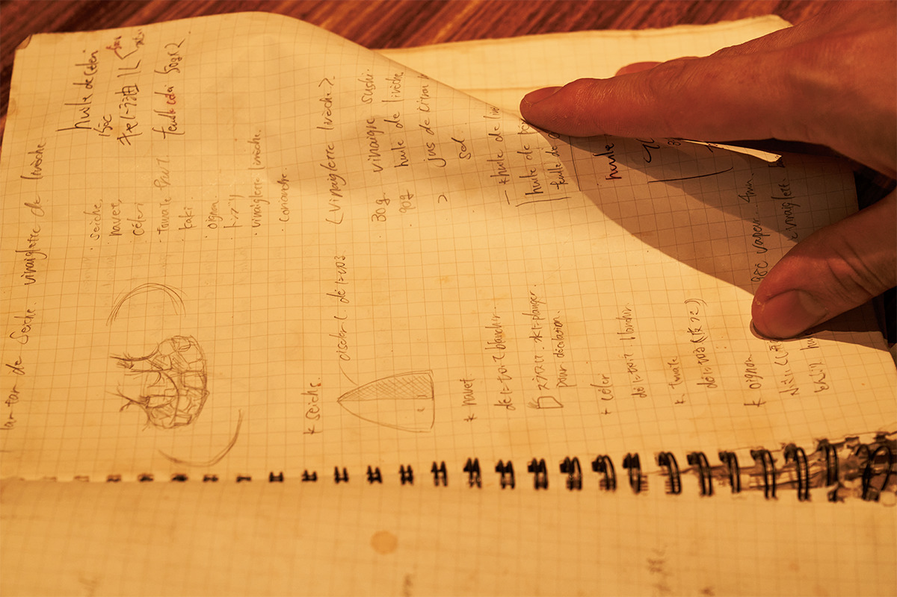
В курсе всегда около одиннадцати блюд. «Одиннадцать моё счастливое число, поэтому и блюд одиннадцать», объяснил шеф в 2023 году и улыбнулся.
«Навыкам и знаниям я учился. Но здесь я думаю о другом: зачем готовить именно на этой земле, как взять её обычаи и культуру, пропустить через себя и что из этого сделать мне самому»
шеф Сёта Итои
Ужин 2023 года открывался хризантемовым чаем на воде, которой соседняя сакэварня готовит своё сакэ. Затем подавали вьюнов, которых сначала «поили» сётю из сакэ-касу, гущи, остающейся после отжима сакэ, а потом жарили, и соусы на основе амадзакэ, сладкого рисового напитка. Батат запаривали, растирали, скатывали в шарики и обжаривали, а потом выкладывали на плиту из камня никкасэки, добытого в Канконоси.
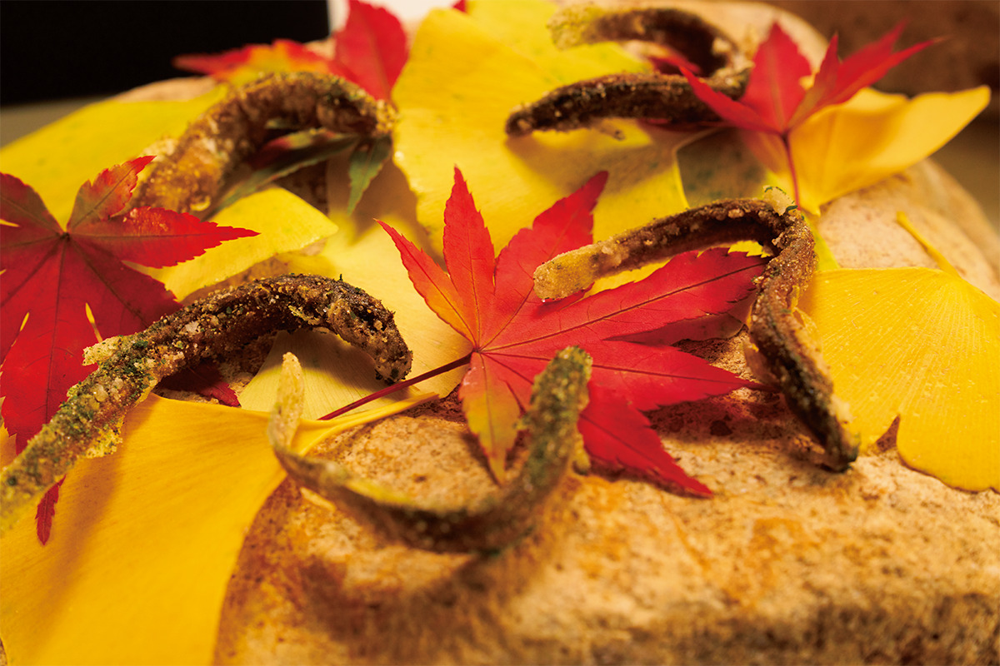
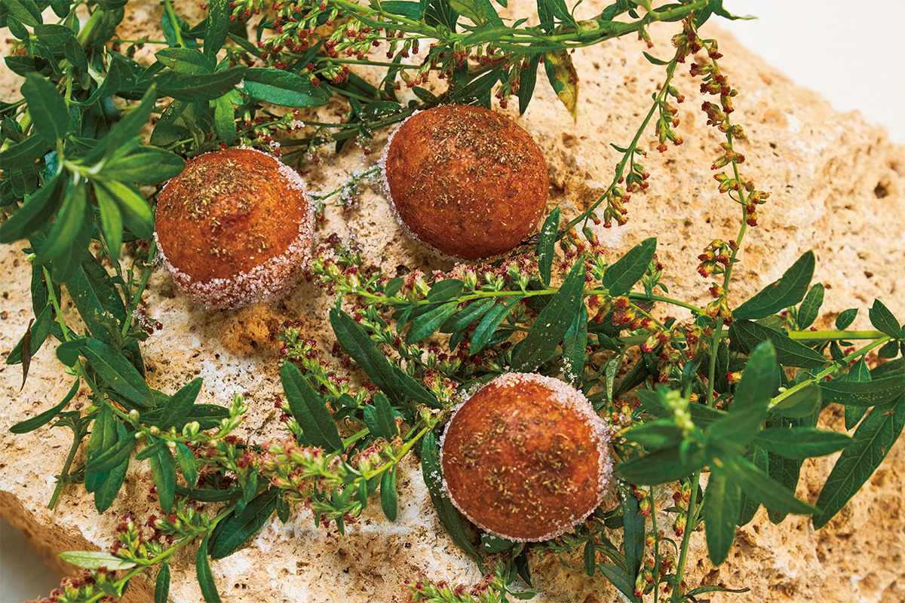
Креветку ботан-эби слегка мариновали в винегрете с юдзу и мёдом. Из креветочных голов варили консоме и добавляли в него сок юдзу, чтобы убрать запах креветки, а рядом лежали дикая гречиха и арахис.
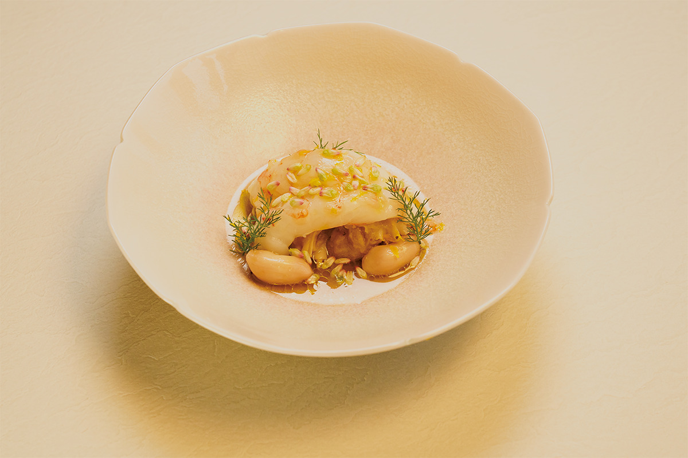
Одно из блюд шеф придумал после короткой стажировки в Калифорнии. Скумбрию недолго выдерживают в рисовых отрубях, слегка обжигают и заворачивают в лепёшку тако со сливочным сыром и шалотом, а есть её нужно руками.
«В Калифорнии очень сильна мексиканская культура, там интересно работают с травами, и я решил взять это в свою кухню. Да и заворачивать еду руками и откусывать большой кусок весело и немного по-дикому»
шеф Сёта Итои
Обжаренный лотос Кага с несколькими специями тоже был безупречен, а заканчивался ужин мороженым из сакэ-касу, оставшейся от сакэ дзюммай дайгиндзё соседней сакэварни. Продюсер, побывавший здесь в 2023 году, сравнил этот ужин с живым концертом музыканта, у которого есть и техника, и чутьё: в нём есть напор и большая свобода.
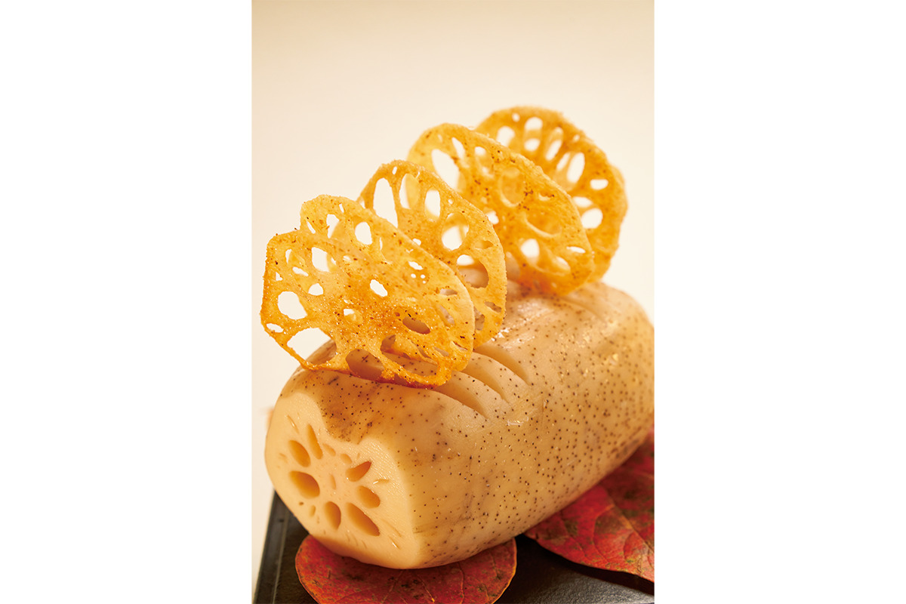
В Хокурику сильна культура ферментации, поэтому шеф сам ведёт закваску из рисовых отрубей. На завтрак здесь подают японскую еду: домашние соленья нукадзукэ и рыбу, выдержанную в кодзи и запечённую.
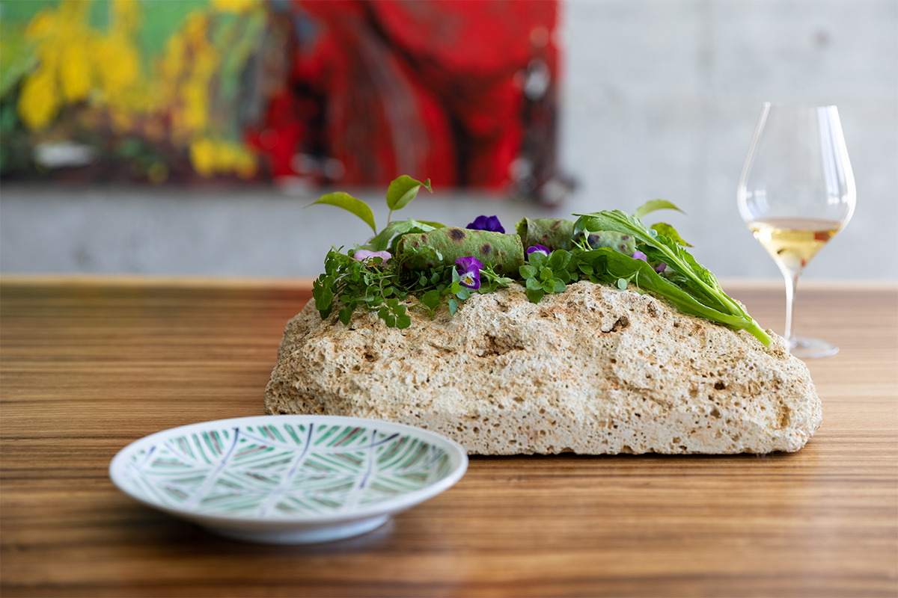
Посуда
Кутани-яки и камень Канконоси
Еду подают на посуде мастеров Кутани-яки, прежде всего мастерской «Суда Сэйка», а плитами служит камень Канконоси, который когда-то добывали прямо напротив обержи. По желанию к ужину подбирают сакэ соседней сакэварни.
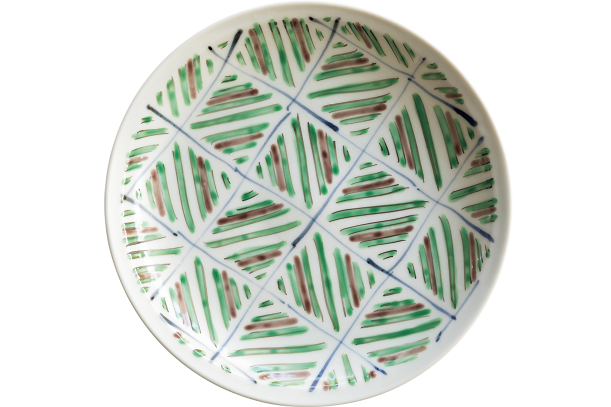
«Кухня eaufeu складывается из того, что делают в Комацу: продуктов и сакэ от тех, кто их производит, посуды. Я работаю вместе со всеми этими людьми, пропускаю это через свою технику и опыт и так показываю Комацу. Дальше хочу ещё теснее работать с мастерами и искать, почему всё это может быть только в Комацу. Хочу, чтобы о Комацу узнали не только в Японии, но и во всём мире»
шеф Сёта Итои
Auberge eaufeu
- Адрес
- префектура Исикава, Комацу, Канконоси-мати, Ро 48
- Телефон
- +81 761-41-7080
- Часы работы
- обед 12:00–15:00 (последний заказ 13:00, только суббота, воскресенье и праздники), ужин 17:30–22:00 (последний заказ 19:00), обед и ужин по предварительной записи; кафе 11:00–17:00
- Выходные
- вторник и среда (в праздники открыто)
- Номера
- 12 номеров шести типов
- Заезд / выезд
- 15:00 / 11:00
- Цены / Вход
- ночь с ужином и завтраком от 37 500 иен на человека с налогом и сервисным сбором
- Как добраться
- около 20 минут на машине от станции JR Комацу, около 25 минут от съезда Комацу скоростной дороги Хокурику, около 30 минут от аэропорта Комацу
- Сайт
- eaufeu.jp
Рядом
Комацу глазами шефа
«Вода здесь вкусная, и это видно по тому, сколько в Комацу вкусного»
шеф Сёта Итои
Первым шеф называет соседнюю сакэварню Noguchi Naohiko Sake Institute. Её сакэ варит Наохико Ногути, мастер-винодел тодзи, которого в Японии называют «богом сакэ», и оно хорошо оттеняет вкус еды. Вода для кухни так важна, что обержа берёт у сакэварни её воду для домашних напитков и бульонов. При сакэварне есть дегустационный зал «Тоан», где можно сравнить несколько сортов.
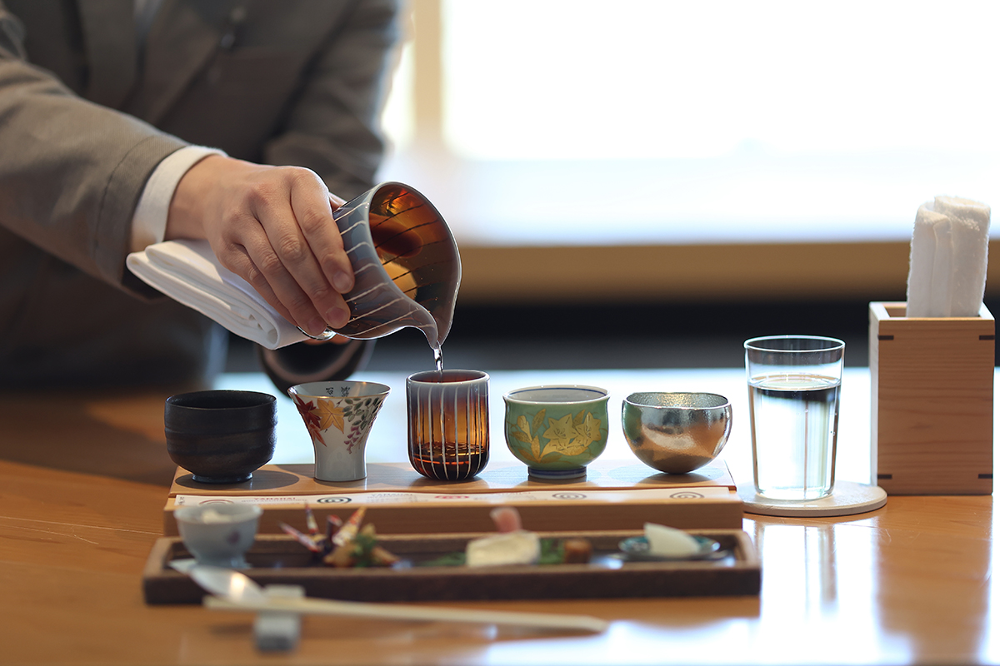
Noguchi Naohiko Sake Institute, дегустационный зал «Тоан»
- Адрес
- префектура Исикава, Комацу, Канконоси-мати, Ва 1-1
- Телефон
- +81 761-41-1227
- Часы работы
- сеансы в 11:00, 13:00 и 15:00, по предварительной записи
- Выходные
- среда
Из ресторанов шеф выделяет SHÓKUDŌ YArn с одной звездой Michelin. Его ведут повара, муж и жена, учившиеся в Европе. Привычные вкусы здесь подают с неожиданной стороны и с игрой.
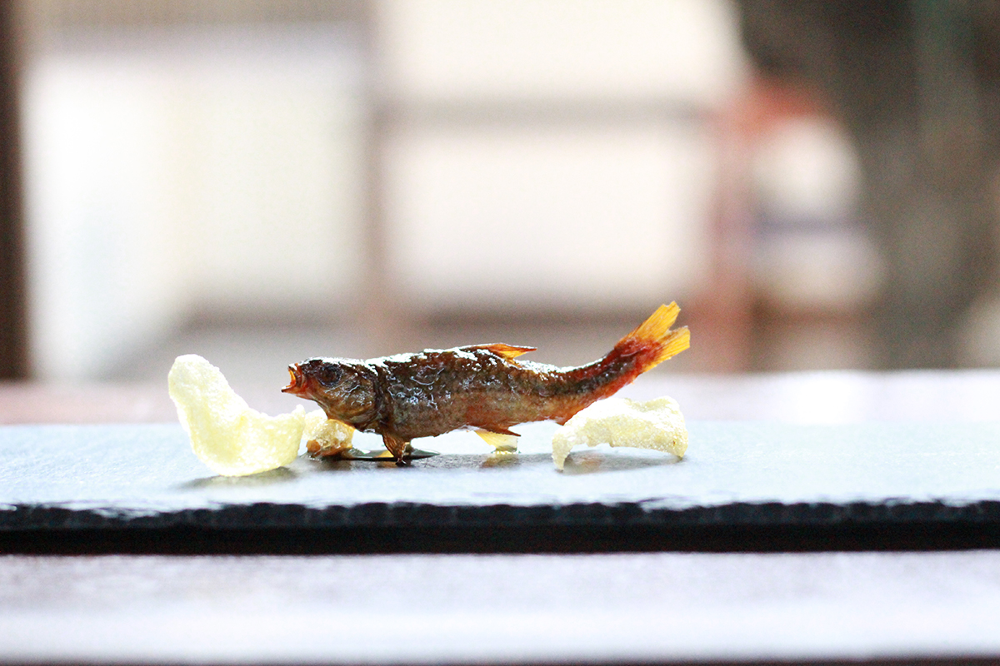
SHÓKUDŌ YArn
- Адрес
- префектура Исикава, Комацу, Ёситакэ-мати, 1-37-1
- Телефон
- +81 761-58-1058
- Часы работы
- 12:00–14:30 (вход в 12:00), 18:00–23:00 (вход до 19:00), по предварительной записи
- Выходные
- понедельник и воскресенье
Поесть попроще шеф советует в пекарне «Кокуу», которая переехала в Комацу из Канадзавы. За простым хлебом, в котором слышен вкус самой пшеницы, с утра выстраивается очередь.
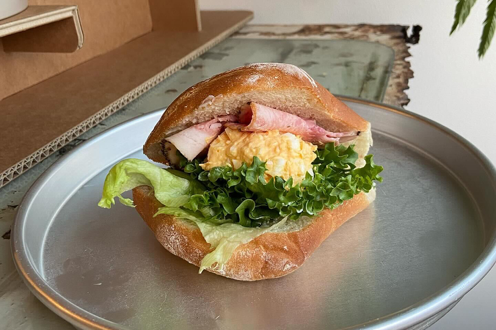
«Кокуу»
- Адрес
- префектура Исикава, Комацу, Хасэ-мати, Кэ 100
- Телефон
- +81 50-8884-7986
- Часы работы
- 8:00–15:00 (пока не закончится хлеб)
- Выходные
- нерегулярно
Где хорошая еда, там и посуда. В CERABO KUTANI работают фабрика глины, галерея и мастерская для гостей. Здесь можно увидеть, как делают Кутани-яки, и узнать о мастерах, а заодно найти подарок на память о Комацу.
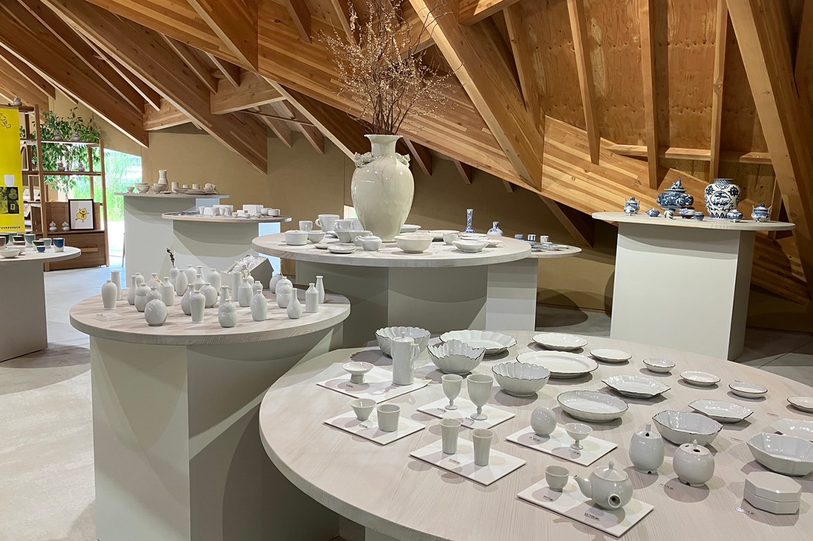
CERABO KUTANI
- Адрес
- префектура Исикава, Комацу, Вакасуги-мати, А 91
- Телефон
- +81 761-48-4235
- Часы работы
- 10:00–17:00 (вход до 16:30)
- Выходные
- среда
Фото: Масааки Миядзава, Норихито Судзуки, Ясухико Роппонги.